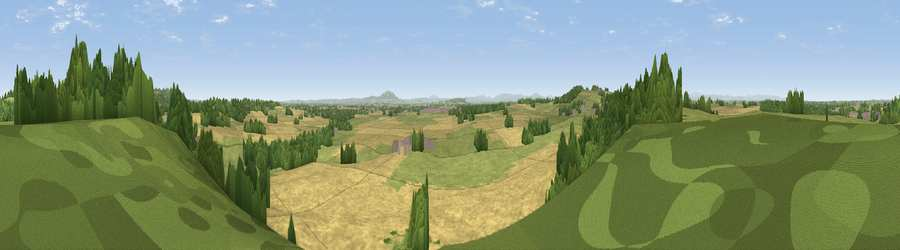

Besford Wood
#15795 in England · top 53% of its area beats it · near Lee BrockhurstThe view, rendered

A 360° render of this exact spot computed from the terrain model, tree cover and land cover — summer colours, afternoon light, calibrated against photographs of famous viewpoints. Real trees, hedges and buildings will differ in detail.
The panorama
Grey silhouette: terrain skyline in each direction (720 bearings, Earth curvature and refraction included). Dashed green: skyline with trees (+15 m) and buildings (+8 m) as obstacles. Blue strip: how far the ground is visible on each bearing.
Where the view opens
Wedge length = distance to the farthest visible ground on that bearing (vegetation-aware). Rings at 10, 25 and 50 km.
What fills the view
55% cropland · 23% grassland · 21% woodland ·
Angular shares of the visible panorama (visual magnitude), not map area. Landscape diversity 0.45 (0–1 Shannon).
Key numbers
More beautiful places nearby
The staircase of upgrades: each row has a higher view potential than everything closer. Driving times are estimates from straight-line distance, calibrated against real road routing — check an actual route before setting out.
| Place | Direction | Drive | Score |
|---|---|---|---|
| Viewpoint near Acton Reynald | SW · 2 km | ~6 min | 69.4 |
| Grinshill | WSW · 4 km | ~8 min | 75.2 |
| Viewpoint near Weston-under-Redcastle | NE · 5 km | ~10 min | 77.0 |
| Viewpoint near Marchamley | ENE · 5 km | ~10 min | 77.5 |
| The Ercall | SSE · 19 km | ~32 min | 79.4 |
| Viewpoint near Little Wenlock | SSE · 19 km | ~32 min | 84.2 |
| The Wrekin | SSE · 19 km | ~33 min | 85.0 |
| Viewpoint near Little Wenlock | SSE · 19 km | ~33 min | 86.6 |
52.82639, -2.67041 · source: dobih hill · position refined by local search. Computed location — check access rights before visiting.